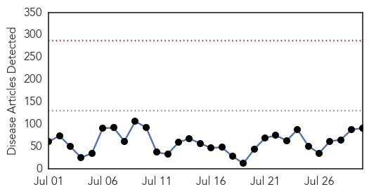
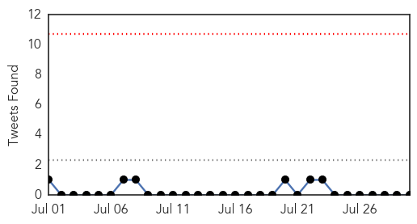
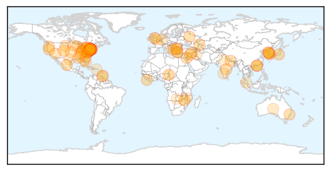

Hepatitis
30-Day Web Trend
4 alerts, 2 warnings

30-Day Twitter Trend
1 alerts, 0 warnings

Article Locations

Article Confidences

Top Articles:
- 0.923
- East African news, Headlines, Business, Tourism, Sports, Health, Entertainment, Education
- 0.901
- FG Expresses Worry over High Rate of Hepatitis, Articles
- 0.896
- Paras Hospitals, Gurgaon conducts educative talk sessions, screening camps and vaccinations to create awareness about Hepatitis
- 0.845
- Health Dept. cites protection offered by HPV immunization
- 0.782
- Negligence of ‘hepatitis could lead to cirrhosis, liver cancer’
- 0.676
- Yazigi: Health Ministry provides free-of-charge medicine for all contiguous diseases
- 0.527
- Pakistan sixth largest hepatitis-infected country: experts
- 0.526
- Doctor advocates inclusion of Hepatitis treatment in NHIS
Top Tweets:
-
No tweets found for Jul 30, 2015
Unknown
30-Day Web Trend
0 alerts, 0 warnings

30-Day Twitter Trend
0 alerts, 0 warnings

Article Locations
Article Confidences
Top Articles:
- 0.999
- S. Korea, WHO experts downplay pandemic potential of MERS
- 0.997
- Two Dead In New York Legionnaires’ Disease Outbreak
- 0.992
- Two dead in Legionnaires' disease outbreak in New York
- 0.992
- OIE fears African Swine Fever will spread to Europe
- 0.991
- Don’t worry about New York City’s Legionnaires’ disease outbreak
- 0.989
- Number of Legionnaires' Cases Rises Amid Deadly Outbreak in NYC: Officials
- 0.985
- Legionnaires’ Disease Sickens 31, 2 Fatally, in the South Bronx
- 0.984
- Climate Change Could be Culprit With Legionnaires' Disease on the Rise
- 0.982
- Malaria outbreak at Vizhinjam
- 0.980
- Outbreak Of Legionnaires' Disease Has Infected 31 People, Killed 2 In NYC, Officials Scrambling To Find Source
- 0.980
- barfblog
- 0.976
- South Bronx Hit By Legionnaires' Disease Outbreak
- 0.972
- Legionnaire's Disease Affects 31 Bronx Residents
- 0.969
- Bacteria in Some Air-Conditioning Systems Kill 2, Sicken 31 in Bronx
- 0.964
- Promising MERS vaccine could prevent future outbreaks
- 0.963
- Outbreak of Legionnaire's Disease Sickens 46 in NYC
- 0.953
- Children's hospital watches for recurrence of enterovirus outbreak
- 0.952
- NYC Identifies Two Sources Of Legionnaires’ Disease Outbreak In Bronx « CBS New York
- 0.942
- MOA Warns Against Eating “Sick Animals”
- 0.933
- Legionnaires' disease kills two, sickens 31 in New York City
- 0.920
- Orders To Terminate AIDS Healthworkers Withdrawn After Indian Health Ministry Intercedes
- 0.917
- Chicago Tribune
- 0.917
- Chicago Tribune
- 0.917
- Chicago Tribune
- 0.917
- Chicago Tribune
- 0.917
- Chicago Tribune
- 0.917
- Chicago Tribune
- 0.917
- Chicago Tribune
- 0.917
- Chicago Tribune
- 0.917
- Chicago Tribune
- 0.917
- Chicago Tribune
- 0.917
- New norovirus could down millions, on land and sea
- 0.910
- South Korea declares end to MERS
- 0.885
- Deadly kiss? Bug could spread deadly disease to the Lowcountry
- 0.875
- Mystery fevers
- 0.872
- CDC lifts travel warning to Seoul after ‘de facto end’ of MERS
- 0.853
- Upper Klamath Lake algae health alert extended
- 0.851
- Update on latest MERS situation in Saudi Arabia
- 0.842
- NunatsiaqOnline 2015-07-30: NEWS: Nunavut walrus tests positive for trichinella, GN warns
- 0.827
- Flesh-eating bacteria kills Virginia fisherman — Health — Bangor Daily News — BDN Maine
- 0.823
- West Chester Employee Tests Positive For Legionnaire's Disease
- 0.815
- DEADLY OUTBREAK 2 dead after Legionnaires’ disease hits New York City
- 0.793
- E. coli case being investigated at Lovelock Correctional Center
- 0.792
- Prevention methods against 'Rabbit Fever'
- 0.777
- CVS Health Announces New Clinical Affiliations with Lawrence Memorial Hospital and Lehigh Valley Health Network
- 0.763
- At WCU, cleanup but not concern over Legionnaire's
- 0.750
- Windsor News - Breaking News & Latest Headlines
- 0.748
- CDC: 53 Million Adults In The US Live With A Disability
- 0.745
- FDA Clamps Down on Cilantro From Mexico Due To Human Feces Contamination
- 0.730
- In rare cases, infection may be at root of back pain
Showing top 50 articles...
Top Tweets:
-
No tweets found for Jul 30, 2015